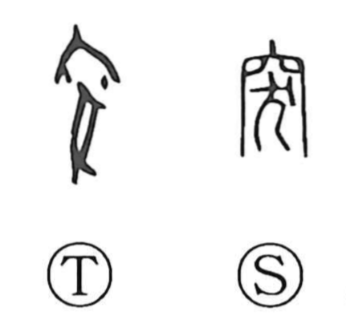

突

Kun: tsuku | On: totsu
to thrust ・ to pierce ・ to project ・ sudden
Explanation
突 combines the oven’s opening (穴) with a sacrificial dog (犬), evoking a rite at the hearth in worship of the fire deity. From the image of the oven’s smoke vent or stack—later reflected in words like 煙突 (chimney)—the graph took on the sense of something that juts out or bursts forth. Hence it comes to mean to project, thrust, or pierce, and by extension conveys suddenness, as seen in compounds such as 突如 and 突然.